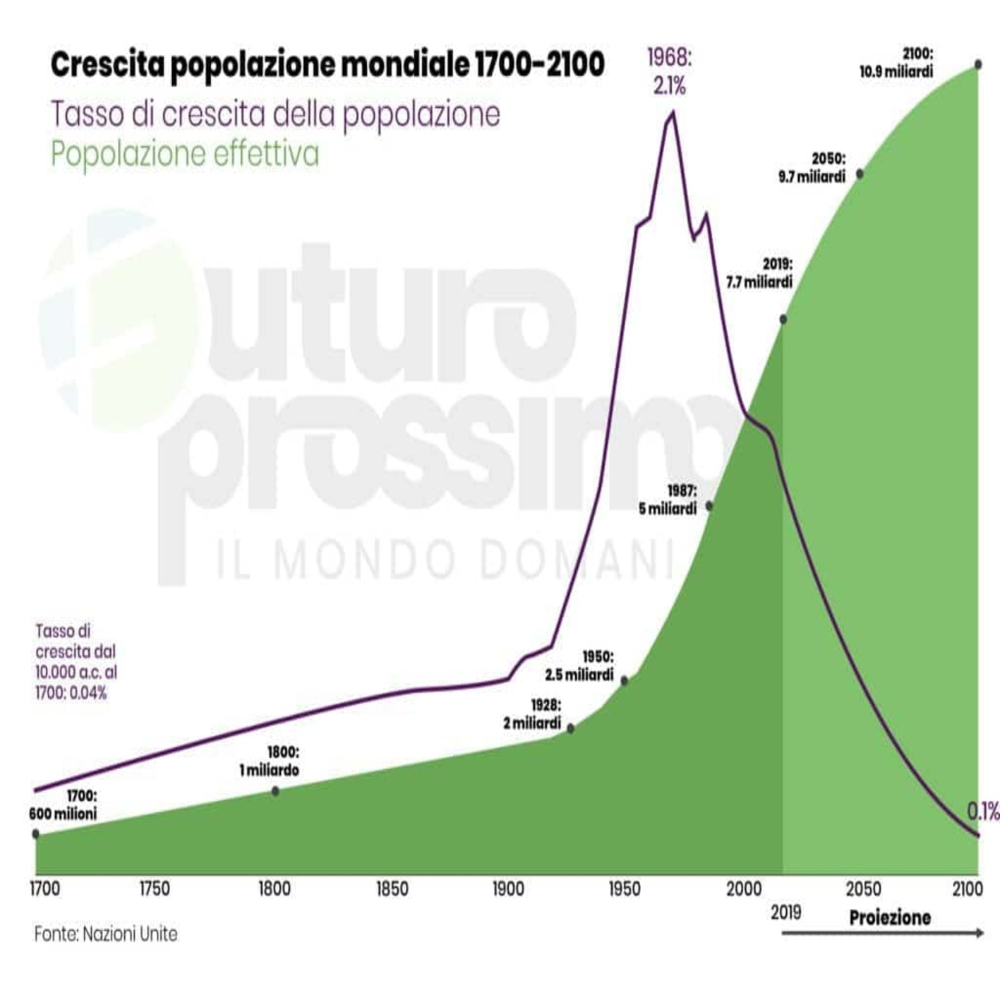

| |
CRESCITÀ DEMOGRAFICA
CHE COS'E ?
La crescita demografica si riferisce all'aumento netto della popolazione in un determinato periodo di tempo, risultante dalla differenza tra il numero di nascite e il numero di decessi, oltre agli eventuali flussi migratori. Quando le nascite superano i decessi, si verifica una crescita demografica positiva, mentre il contrario porta a una crescita negativa. La crescita demografica può avere impatti significativi sulle risorse, l'economia e l'ambiente di una regione.
DA COSA VIENE CAUSATA ?
La crescita demografica è influenzata da diversi fattori, tra cui:
Tassi di natalità: Regioni con alti tassi di natalità, ovvero un elevato numero di nascite rispetto alla popolazione totale, tendono a sperimentare una crescita demografica più rapida.
Tassi di mortalità: Basse tasse qui indicano che meno persone stanno morendo rispetto a quelle che stanno nascendo, contribuendo così alla crescita demografica.
Flussi migratori: Le migrazioni possono influenzare la crescita demografica, sia positivamente che negativamente, a seconda che le persone si spostino verso o lontano da una determinata area.
Condizioni socioeconomiche: La prosperità economica, l'accesso a cure mediche adeguate e le condizioni di vita influenzano la decisione delle persone di avere figli e la loro sopravvivenza.
Fattori culturali e religiosi: Le credenze culturali e religiose possono avere un impatto sul comportamento riproduttivo, influenzando la prospettiva sul numero di figli desiderati.
Programmi di controllo delle nascite: L'accesso e l'efficacia dei programmi di controllo delle nascite possono influire sulla crescita demografica regolando il numero di nascite.
I MAGGIORI CASI REGISTRATI DI AUMENTI DEMOGRAFICI NELLA STORIA:
Alcuni dei periodi nella storia con i maggiori aumenti demografici includono:
Neolitico (circa 10.000 a.C.): La transizione dalla caccia e raccolta all'agricoltura ha portato a un aumento delle popolazioni umane, in quanto la disponibilità di cibo migliorata ha consentito una crescita demografica.
Impero Romano (circa 200 a.C. - 200 d.C.): L'espansione dell'Impero Romano ha portato a un notevole aumento della popolazione in diverse regioni, grazie alla stabilità politica e alle infrastrutture sviluppate.
Rinascimento (XIV-XVII secolo): In Europa, il Rinascimento ha portato a progressi culturali, tecnologici ed economici che hanno contribuito a una crescita demografica.
Rivoluzione Industriale (dal XVIII secolo): L'urbanizzazione e l'industrializzazione hanno portato a un aumento significativo della popolazione in molte parti del mondo, con un impatto particolare in Europa e Nord America.
Dopoguerra (dopo la seconda guerra mondiale): Il periodo successivo alla guerra ha visto un rapido aumento demografico in diverse regioni del mondo, alimentato dalla stabilità e dalla ricostruzione.
Periodo contemporaneo (seconda metà del XX secolo e oltre): Miglioramenti nelle cure mediche, l'accesso ai servizi sanitari e condizioni di vita migliori hanno contribuito a un aumento sostanziale della popolazione globale.
Rappresentazione di Roma durante il periodo dell'impero romano con già due milioni di abitanti  Grafo della crescità demografica avvenuta durante la prima Rivoluzione Industriale.  Grafico della crescità demografica dalla rivoluzione industriale con una previsione fino al 2100 |
 |